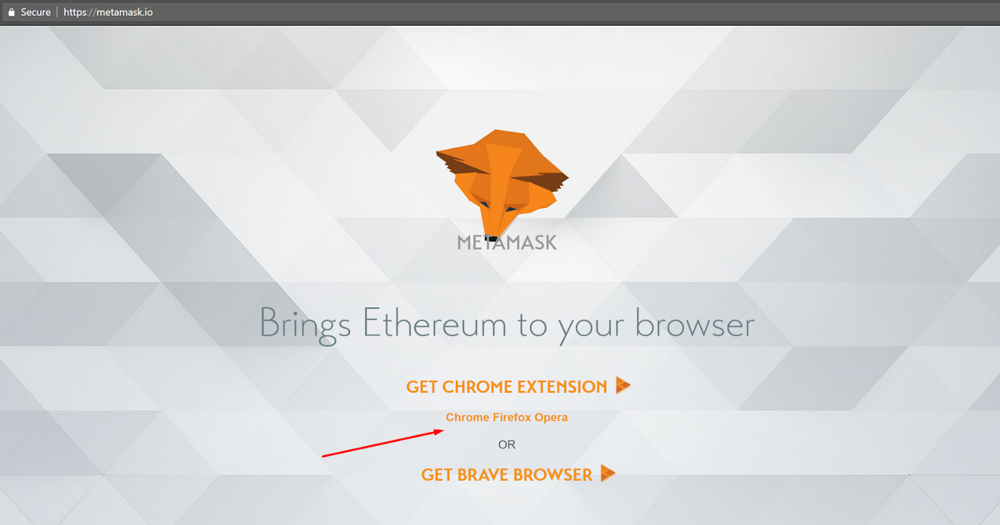

Click on Install MetaMask as a Google Chrome extension.
Click Add to Chrome.
Click Add Extension.
Click on Install MetaMask as a Google Chrome extension.
Click Add to Chrome.
Click Add Extension.

Step 2. Create an account.
Click on the extension icon in the upper right corner to open MetaMask.
To install the latest version and be up to date, click Try it now.
Click Continue.
You will be prompted to create a new password. Click Create.

Proceed by clicking Next and accept the Terms of Use.
Click Reveal Secret Words. There you will see a 12 words seed phrase. This is really important and usually not a good idea to store digitally, so take your time and write it down.


Verify your secret phrase by selecting the previously generated phrase in order. Click Confirm.
And that’s it now you have created your MetaMask account successfully. A new Ethereum wallet address has just been created for you. It’s waiting for you to deposit funds, and if you want to learn how to do that, look at the next step below.
Click on the account icon.
Click Settings.
Find Reveal Seed Words and click it.
Enter your password.
Now save the Secret Seed Phrase somewhere, preferably not digitally. The backup is done now all you have to do is to learn the restoring process.
Open Metamask and click Import using the account seed phrase.
Enter your Seed Phrase.
Create a new strong password.
Click Restore.
And that’s it now you have successfully restored your account by following these easy steps. I can say that you are fully prepared now to take on the crypto world as far as your wallet management is concerned.

https://twitter.com/DolliaProject
https://www.facebook.com/profile.php?id=100074403540456

https://t.me/+azemKio_fOhhMDUy


https://discord.gg/8mvMcaefZU